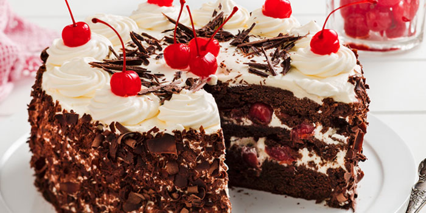

Black Forest Cake

Ingredients: Cake
- 2 cup all-purpose flour
- 2 cups granulated sugar
- 3/4 cup Dutch-processed cocoa powder sifted
- 2 tsp baking soda
- 1 tsp baking powder
- 1 tsp salt
- 1/2 cup vegetable oil
- 1 cup buttermilk room temperature
- 1 cup hot water
- 2 large eggs
- 2 tsp vanilla
Ingredients: Cherry Liqueur Syrup
- 1/2 cup granulated sugar
- 1/2 cup water
- 1/4 cup cherry liqueur
Ingredients: Whipped Cream Frosting
- 3 cup whipping cream cold
- 1/4 cup powdered sugar sifted
Ingredients: Chocolate Bark
- 250 g good quality dark chocolate chopped
Assembly:
- 2 1/2 cups cherries pitted and cut in half
- 1 bar dark chocolate for shavings (optional) cherries
Time:
- Prep: 2h
- Cook: 45m
- Ready In: 2h 45m
Directions:
Chocolate Cake
- Preheat oven to 350F, grease two 8" round baking pans and dust with cocoa powder. Line bottoms with parchment.
- Place all dry ingredients into the bowl of a stand mixer fitted with a paddle attachment. Stir to combine.
- In a medium bowl whisk all wet ingredients (pour hot water in slowly as not to cook the eggs).
- Add wet ingredients to dry and mix on medium for 2-3 mins. Batter will be very thin.
- Pour evenly into prepared pans. I used a kitchen scale to ensure the batter is evenly distributed.
- Bake for 45 mins or until a cake tester comes out mostly clean.
- Cool 10 minutes in the pans then turn out onto a wire rack to cool completely.
Cherry Liqueur Syrup
- Place sugar and water into a small pot. Stir and bring to a boil. Simmer for 1 min then remove from heat. Stir in cherry liqueur and allow to cool completely.
Whipped Cream Frosting
- Whip cream and powdered sugar until stiff peaks. Ideally in a cold bowl with a cold whisk.
Chocolate Bark
- Melt chocolate over a double boiler or in 20 second bursts in the microwave.
- Using a large offset spatula, spread melted chocolate in a thin layer on a large sheet of parchment.
- Using a large offset spatula, spread melted chocolate in a thin layer on a large sheet of parchment.
- Roll up from the short side of the parchment. Place on a baking sheet and refrigerate or freeze until firm.
- Unroll to create chocolate bark.
Assembly:
- Cut each cake layer in half horizontally.
- Place one layer of cake on a cake stand or serving plate. Brush generously with cherry syrup.
- Top with approximately 1 cup whipped cream and spread evenly. Top with approximately 1 cup of cherries and gently press them into the whipped cream. Repeat with remaining layers and frost the outside of the cake.
- Decorate with chocolate bark, chocolate shavings, rosettes, and cherries if desired.